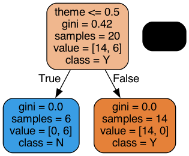

On va essayer de faire un systeme de recommendation en fonction de l’utilisateur de de ces 15 premiers choix#
On import d’abord les données des images#
import pandas as pd
import os
# Load the data
dir1 = "images"
dir2 = "ExifDatatest2.json"
dir = os.path.join(dir1, dir2)
data = pd.read_json(dir)
# print(data.tail())
print(data.theme.unique())
print(data.theme.value_counts())
['Exoplanet' 'Pokemon2' 'Moto' 'Voitures']
Pokemon2 366
Exoplanet 183
Moto 130
Voitures 38
Name: theme, dtype: int64
On cree le systemes de recherche d’images aléatoires dans nos images#
import random
def randomImage():
dir1 = "images"
themes = ["Exoplanet", "Moto", "Pokemon2", "Voitures"]
dir2 = random.choice(themes)
dir = os.path.join(dir1, dir2)
files = os.listdir(dir)
try:
files.remove(".DS_Store")
# remove all csv
files = [f for f in files if (f[-3:] != "csv" or f[-3:] != "csv")]
except:
pass
file = random.choice(files)
return file
randomImage()
'Chevrolet_Nova_(1984).jpg'
Création de tout le nécessaire pour enregistrer les choix de l’utilisateur#
import pandas as pd
col = list(data.columns) + ["choice"]
data_user = pd.DataFrame(columns=col)
data_user
| theme | image | width | height | format | orientation | color_0 | color_1 | color_2 | color_3 | color_4 | red | green | blue | choice |
|---|
Récuperation des 20 premiers choix de l’utilisateur#
import os
import matplotlib.pyplot as plt
import matplotlib.image as mpimg
import numpy as np
def get_user_choice():
random_img = randomImage()
while random_img in data['image']:
random_img = randomImage()
print(random_img)
img_path = os.path.join(dir1, data.loc[data['image'] == random_img]['theme'].values[0], random_img)
img = mpimg.imread(img_path)
plt.imshow(img)
plt.show()
user_choice = input("Aimez-vous cette image ? (O/N)")
return user_choice, random_img
for i in range(20):
print(i)
user_choice, random_img = get_user_choice()
print(data.loc[data['image'] == random_img].values[0])
data_user.loc[random_img] = np.append(data.loc[data['image'] == random_img].values[0],(user_choice))
print("*"*50)
print(" END OF CHOICES")
print("*"*50)
0
TrES-2b.jpg
['Exoplanet' 'TrES-2b.jpg' 1920 1080 'JPEG' 'no exif' 'black' 'darkgrey'
'black' 'black' 'darkgrey' 0.15 0.15 0.15]
1
elekid.jpg
['Pokemon2' 'elekid.jpg' 120 120 'JPEG' 'no exif' 'black' 'grey'
'lightgrey' 'darkgrey' 'darkgrey' 0.15 0.15 0.15]
2
Aprilia_SRV_850.jpg
['Moto' 'Aprilia_SRV_850.jpg' 2880 1620 'JPEG' 'no exif' 'black'
'lightgrey' 'darkgrey' 'grey' 'darkgrey' 0.5 0.15 0.15]
3
Kepler-42b.jpg
['Exoplanet' 'Kepler-42b.jpg' 2880 1620 'JPEG' 'no exif' 'black'
'lightgrey' 'darkgrey' 'black' 'brown' 0.15 0.15 0.15]
4
golduck.jpg
['Pokemon2' 'golduck.jpg' 120 120 'JPEG' 'no exif' 'black' 'grey'
'darkgrey' 'lightgrey' 'darkgrey' 0.15 0.15 0.15]
5
Buick_Verano.jpg
['Voitures' 'Buick_Verano.jpg' 1600 900 'JPEG' 'no exif' 'white'
'darkgrey' 'black' 'grey' 'lightgrey' 0.5 0.5 0.5]
6
Mercedes_Grand-Prix.jpg
['Voitures' 'Mercedes_Grand-Prix.jpg' 2880 1620 'JPEG' 'no exif'
'darkgrey' 'grey' 'lightgrey' 'darkgrey' 'black' 0.5 0.5 0.5]
7
Montesa_Ciclo.jpg
['Moto' 'Montesa_Ciclo.jpg' 2880 1620 'JPEG' 'no exif' 'grey' 'darkgrey'
'lightgrey' 'darkgrey' 'lightgrey' 0.5 0.5 0.5]
8
Talbot_T150C.jpg
['Voitures' 'Talbot_T150C.jpg' 2880 1620 'JPEG' 'no exif' 'black' 'white'
'lightgrey' 'grey' 'darkgrey' 0.5 0.5 0.5]
9
Dino_206_S.jpg
['Voitures' 'Dino_206_S.jpg' 2880 1620 'JPEG' 'no exif' 'black' 'red'
'white' 'darkgrey' 'grey' 0.15 0.15 0.15]
10
KELT-3_b.jpg
['Exoplanet' 'KELT-3_b.jpg' 2880 1620 'JPEG' 'no exif' 'brown' 'black'
'white' 'darkgrey' 'grey' 0.5 0.5 0.15]
11
83_Leonis_Bb.jpg
['Exoplanet' '83_Leonis_Bb.jpg' 640 360 'JPEG' 'no exif' 'black' 'grey'
'darkgrey' 'darkgrey' 'grey' 0.15 0.15 0.15]
12
Ford_Explorer.jpg
['Voitures' 'Ford_Explorer.jpg' 2880 1620 'JPEG' 'no exif' 'grey'
'darkgrey' 'white' 'black' 'lightgrey' 0.5 0.5 0.5]
13
arbok.jpg
['Pokemon2' 'arbok.jpg' 120 120 'JPEG' 'no exif' 'grey' 'black' 'grey'
'lightgrey' 'darkgrey' 0.15 0.15 0.15]
14
Bultaco_Gaviota.jpg
['Moto' 'Bultaco_Gaviota.jpg' 2880 1620 'JPEG' 'no exif' 'black'
'lightgrey' 'brown' 'darkgrey' 'grey' 0.5 0.5 0.15]
15
Fiat_Ducato.jpg
['Voitures' 'Fiat_Ducato.jpg' 1600 900 'JPEG' 'no exif' 'darkgrey'
'lightgrey' 'grey' 'lightgrey' 'darkgrey' 0.5 0.5 0.5]
16
HAT-P-28b.jpg
['Exoplanet' 'HAT-P-28b.jpg' 960 540 'JPEG' 'no exif' 'black' 'lightgrey'
'darkgrey' 'black' 'grey' 0.15 0.15 0.15]
17
togetic.jpg
['Pokemon2' 'togetic.jpg' 120 120 'JPEG' 'no exif' 'grey' 'black'
'lightgrey' 'darkgrey' 'white' 0.15 0.15 0.15]
18
Kawasaki_VN_1500.jpg
['Moto' 'Kawasaki_VN_1500.jpg' 2880 1620 'JPEG' 'no exif' 'grey'
'darkgrey' 'grey' 'lightgrey' 'darkgrey' 0.5 0.5 0.5]
19
HD_76700_b.jpg
['Exoplanet' 'HD_76700_b.jpg' 640 360 'JPEG' 'no exif' 'black' 'white'
'darkgrey' 'grey' 'darkgrey' 0.15 0.15 0.15]
**************************************************
END OF CHOICES
**************************************************
Encodage des données#
# on enleve les colonnes inutiles
data_user.drop('orientation', axis=1, inplace=True)
data_user.head()
| theme | image | width | height | format | color_0 | color_1 | color_2 | color_3 | color_4 | red | green | blue | choice | |
|---|---|---|---|---|---|---|---|---|---|---|---|---|---|---|
| TrES-2b.jpg | Exoplanet | TrES-2b.jpg | 1920 | 1080 | JPEG | black | darkgrey | black | black | darkgrey | 0.15 | 0.15 | 0.15 | Y |
| elekid.jpg | Pokemon2 | elekid.jpg | 120 | 120 | JPEG | black | grey | lightgrey | darkgrey | darkgrey | 0.15 | 0.15 | 0.15 | N |
| Aprilia_SRV_850.jpg | Moto | Aprilia_SRV_850.jpg | 2880 | 1620 | JPEG | black | lightgrey | darkgrey | grey | darkgrey | 0.5 | 0.15 | 0.15 | N |
| Kepler-42b.jpg | Exoplanet | Kepler-42b.jpg | 2880 | 1620 | JPEG | black | lightgrey | darkgrey | black | brown | 0.15 | 0.15 | 0.15 | Y |
| golduck.jpg | Pokemon2 | golduck.jpg | 120 | 120 | JPEG | black | grey | darkgrey | lightgrey | darkgrey | 0.15 | 0.15 | 0.15 | N |
from sklearn.preprocessing import LabelEncoder
themeLabel = LabelEncoder()
data_user['theme'] = themeLabel.fit_transform(data_user['theme'])
widthLabel = LabelEncoder()
data_user['width'] = widthLabel.fit_transform(data_user['width'])
heightLabel = LabelEncoder()
data_user['height'] = heightLabel.fit_transform(data_user['height'])
formatLabel = LabelEncoder()
data_user['format'] = formatLabel.fit_transform(data_user['format'])
colorLabel = LabelEncoder()
data_user['color_0'] = colorLabel.fit_transform(data_user['color_0'])
data_user['color_1'] = colorLabel.fit_transform(data_user['color_1'])
data_user['color_2'] = colorLabel.fit_transform(data_user['color_2'])
data_user['color_3'] = colorLabel.fit_transform(data_user['color_3'])
data_user['color_4'] = colorLabel.fit_transform(data_user['color_4'])
RGBLabel = LabelEncoder()
data_user['red'] = RGBLabel.fit_transform(data_user['red'])
data_user['green'] = RGBLabel.fit_transform(data_user['green'])
data_user['blue'] = RGBLabel.fit_transform(data_user['blue'])
resultLabel = LabelEncoder()
data_user['choice'] = resultLabel.fit_transform(data_user['choice'])
data_user.tail()
| theme | image | width | height | format | color_0 | color_1 | color_2 | color_3 | color_4 | red | green | blue | choice | |
|---|---|---|---|---|---|---|---|---|---|---|---|---|---|---|
| Fiat_Ducato.jpg | 3 | Fiat_Ducato.jpg | 3 | 3 | 0 | 2 | 3 | 3 | 3 | 2 | 1 | 1 | 1 | 0 |
| HAT-P-28b.jpg | 0 | HAT-P-28b.jpg | 2 | 2 | 0 | 0 | 3 | 2 | 0 | 3 | 0 | 0 | 0 | 1 |
| togetic.jpg | 2 | togetic.jpg | 0 | 0 | 0 | 3 | 0 | 4 | 1 | 5 | 0 | 0 | 0 | 0 |
| Kawasaki_VN_1500.jpg | 1 | Kawasaki_VN_1500.jpg | 5 | 5 | 0 | 3 | 1 | 3 | 3 | 2 | 1 | 1 | 1 | 0 |
| HD_76700_b.jpg | 0 | HD_76700_b.jpg | 1 | 1 | 0 | 0 | 5 | 2 | 2 | 2 | 0 | 0 | 0 | 1 |
Entrainement du modèle#
from sklearn import tree
dtc = tree.DecisionTreeClassifier()
data_uc = data_user.drop('choice', axis=1)
data_uc = data_uc.drop('image', axis=1)
data_choice = data_user['choice']
dtc = dtc.fit(data_uc , data_choice)
Affichage de l’abre de décision#
import graphviz
import pydotplus
from IPython.display import Image, display
dot_data = tree.export_graphviz(dtc, out_file=None,
feature_names=data_uc.columns,
filled=True, rounded=True,
class_names =
resultLabel.inverse_transform(
pd.DataFrame(data_choice).choice.unique())
)
graph = graphviz.Source(dot_data)
pydot_graph = pydotplus.graph_from_dot_data(dot_data)
img = Image(pydot_graph.create_png())
display(img)
#pydot_graph.write_png('tree.png')

Predictions sur 3 images#
# avec la derniere image des voitures
N = 3
for i in range(N):
user_choice, random_img = get_user_choice()
while random_img in data_user['image']:
user_choice, random_img = get_user_choice()
# getting prediction
try:
prediction = dtc.predict(
[[
themeLabel.transform(data_random['theme'])[0],
widthLabel.transform(data_random['width'])[0],
heightLabel.transform(data_random['height'])[0],
formatLabel.transform(data_random['format'])[0],
colorLabel.transform(data_random['color_0'])[0],
colorLabel.transform(data_random['color_1'])[0],
colorLabel.transform(data_random['color_2'])[0],
colorLabel.transform(data_random['color_3'])[0],
colorLabel.transform(data_random['color_4'])[0],
RGBLabel.transform(data_random['red'])[0],
RGBLabel.transform(data_random['green'])[0],
RGBLabel.transform(data_random['blue'])[0]
]]
)
except:
N += 1
continue
# data de l'images
data_random = data.loc[data['image'] == random_img]
print(data_random)
print(f"Prédiction de l'abre : {resultLabel.inverse_transform(prediction)}")
importance = dict(zip(list(data_user.columns), dtc.feature_importances_))
print(f"Ordre d'importance: {importance}")
print("choix de l'utilisateur : " + user_choice)
if user_choice == resultLabel.inverse_transform(prediction):
print("Prédiction correcte")
else:
print("Prédiction fausse")
Cell In[76], line 9
prediction = dtc.predict(
^
IndentationError: expected an indented block after 'try' statement on line 8